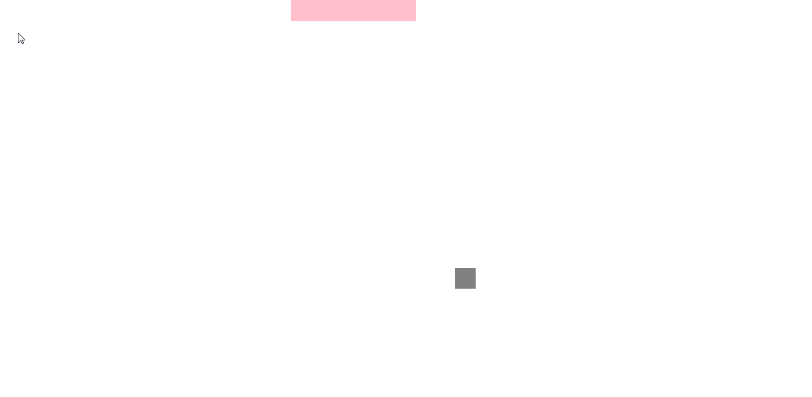
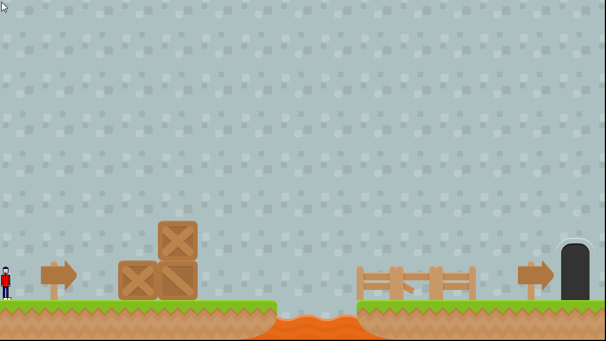

Projects
So far I have done 4 projects including this one.
Portfolio

My portfolio site was the first
I'd done. It pretty much just gave a bit of information
about myself and showed you what I could do with basic
coding this year. That was awhile ago but from that
experience I was able to make this website.
Portfolio 2

This is my second project and my
second portfolio site. My experience with that helped
me make this site. But there's a difference between
the two. As you could probably tell, this site is a
lot more cool tricks and is much better organized.
That is because I am using Bootstrap! "What is bootstrap?",
you may ask. Bootstrap is a free collection of tools
containing HTML and CSS based design templates. It
makes websites super fancy and "responsive" meaning
it makes our websites move to whatever you are using.
Mobile, laptop, desktop, etc. All of th. Like this
one. So, this projects is the same as the first one
but fancier.
Snake

My snake game was the first game I'd created. It's
based upon the game "Snake" game made in the late 1970's
based around a number of shapes that move around following
one another moving like a snake. Every time it eats
food it becomes one of those shapes longer. You lose
you lose if you hit the wall or yourself. What differs
this project from the portfolios, besides this one
being a game, is that in this one I am using Javascript.
Javascript is "an object-oriented computer programming
language commonly used to create interactive effects
within web browsers. Which pretty much means it makes
objects on a website move through code. So my Snake
game is based off of an html site just like my other
two projects before this.
My snake game was the first game I'd created. It's
based upon the game "Snake" game made in the late 1970's
based around a number of shapes that move around following
one another moving like a snake. Every time it eats
food it becomes one of those shapes longer. You lose
you lose if you hit the wall or yourself. What differs
this project from the portfolios, besides this one
being a game, is that in this one I am using Javascript.
Javascript is "an object-oriented computer programming
language commonly used to create interactive effects
within web browsers. Which pretty much means it makes
objects on a website move through code. So my Snake
game is based off of an html site just like my other
two projects before this.
Mario

My Mario type game, inofficially known as "Danger Dude"
is a game, obviously, based off of the Mario Bros.
franchise, by Nintendo. This game is a "side-scroller"
type game, meaning it moves across a side scroll.
As my second game and my fourth project, I had the most
fun making this game. For the first time, I'm most
proud of everything in the project. What I mainly used
to make this game was the game creation engine "Tiled"
and the coding language "melonJS". In Tiled you can
make maps for games of 2 and 3 dimensions using "tiles"
which are basically sheets of custom design or "tilesets".
I used tiled to create my game's levels. Tiled is
very simple and can be used by anyone with or without
tutorial. melonJS is an open-source HTML5 based community
game engine. In other words you use it to make games
with HTML. "Danger Dude" is based within html as well
as my other projects.
My Mario type game, inofficially known as "Danger Dude"
is a game, obviously, based off of the Mario Bros.
franchise, by Nintendo. This game is a "side-scroller"
type game, meaning it moves across a side scroll.
As my second game and my fourth project, I had the most
fun making this game. For the first time, I'm most
proud of everything in the project. What I mainly used
to make this game was the game creation engine "Tiled"
and the coding language "melonJS". In Tiled you can
make maps for games of 2 and 3 dimensions using "tiles"
which are basically sheets of custom design or "tilesets".
I used tiled to create my game's levels. Tiled is
very simple and can be used by anyone with or without
tutorial. melonJS is an open-source HTML5 based community
game engine. In other words you use it to make games
with HTML. "Danger Dude" is based within html as well
as my other projects.
Portfolio 3

Portfolio 3 was a reboot of my Portfolio 2 and an example
of how I could use jQuery. I added a jQuery page to the
Portfolio 2 which displayed elements of jQuery that I have
learned and know how to use. I also added a few jQuery
techniques into a few of my other pages.
Blog

My Blog, unofficially named "Commpunity" is a social
network in which I used the coding language of php for
the first time. It was challenging and exiting, I stayed
a bit ahead of the class for this one as I enjoyed it so
much. I plan to add more style to it. I had a very fun
time working on this project and it can be found on this linkHERE!